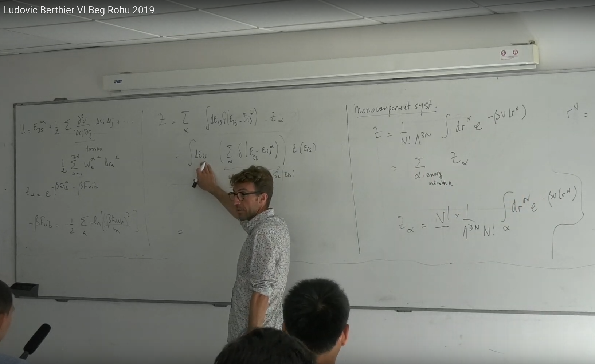
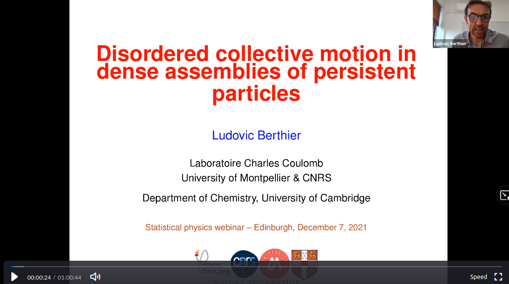

Recorded lectures of Ludovic Berthier

-Perspectives for the next generation of glass transition studies, CECAM, February 2022
-Collective motion in dense assemblies of persistent particles, Edinburgh, December 2021

- Marseille, 2021: Monte carlo simulations for systems with glassy dynamics
-Equilibrium phase transitions in glass-forming liquids, Plenary lecture at CCP 2021, August 2021
-Two lectures in Cargese summer school on "Numerical studies of glassy systems", July 2021
-Plenary lecture on "Yielding of amorphous solids", SoftComp Annual Meeting, June 2021
-The quest of the ideal glass, Public lecture at the Simons Fondation, March 2021
- A random critical point separates brittle and ductile yielding transitions in amorphous materials, Les Houches, 2019
- A numerical perspective on RFOT theory, Roma, 2019
- The first of seven lectures on the glass transition, Beg Rohu, 2019 (see others here).
Lecture 2
Lecture 3
Lecture 4
Lecture 5
Lecture 6
Lecture 7
- First of three lectures on dense active materials, Les Houches, 2018
Lecture 2
Lecture 3
- First of three lectures on entropy, Bangalore, 2018
Lecture 2
Lecture 3
- First of three lectures on computer simulations of supercooled liquids, Boulder, 2017
Lecture 2
Lecture 3
-A lecture on "Nonequilibrium structures and glassy dynamics" given at Ecole Normale Superieure, Paris, January 2015
- Lecture on non-equilibrium statistical mechanics, Montpellier, 2012
Back to main page